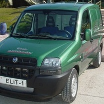
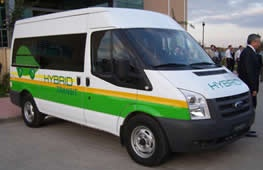
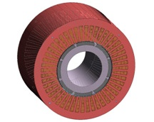
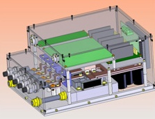
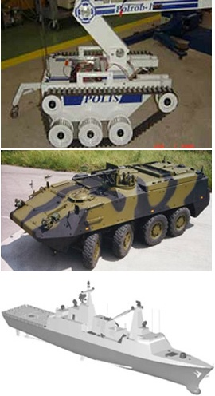

|
Devlet Bakaný Mehmet Aydýn, MHP Ankara Milletvekili Tuðrul Türkeþ'in soru önergesine verdiði yanýtta, TÜBÝTAK'ýn baþarýlarýný anlattý. Bakan Aydýn, Ar-Ge faaliyetleri daha fazla yatýrým yaptýklarýný ve bunun sonucunda; 1996-2008 (sonu) yýllarý itibariyle Ar-Ge faaliyetleri için toplam 2,4 milyar dolar harcama yapýldýðýný bildirdi. Aydýn þunlarý kaydetti:
"1996-2008 itibariyle, destek programlarý kapsamýnda desteklenen projeler çerçevesinde toplam 1,6 milyar ABD dolarý tutarýnda Ar-Ge hacmi oluþturulmuþtur. TUBÝTAK olarak, özel sektör firmalarýnýn harcadýklarý bu tutara karþýlýk olarak desteklenen projelere yaklaþýk 800 milyon dolar destek verilmiþtir."
Aydýn, destek programlarýna özel sektör kuruluþlarýnca, 2000 yýlýnda 260 proje baþvurusu, 2008 yýlýnda ise bin 622 proje baþvurusu yapýldýðýný belirtirken, "Proje baþvurularýnda 6,2 kat artýþ olmuþtur. 1995-2008 aralýðýnda destek programlarýna 7 bin 772 proje baþvurusu yapýlmýþ olup 4 bin 822 proje desteklenmiþ, desteklenen projelerden 2 bin 573 proje sonuçlanmýþ ve bin 700 projenin destek süreci devam etmektedir" dedi.
TÜBÝTAK desteklerinin hibe þeklinde gerçekleþtiðini anýmsatan Aydýn, saðlanan maddi desteðin 350 milyon dolarýnýn makine ve imalat sektörlerindeki Ar-Ge projelerine yapýldýðýný belirtti. Aydýn, baþarý kazanan yeni Ar-Ge projelerini de þöyle aktardý:
"Ar-Ge destekleriyle hafif ticari araçlarda özgün tasarýmlar yapýldý. Özellikle hafif ticari araçlarda Türkiye'nin tasarým ve üretim merkezi olmasý saðlandý. Projeye konu her bir aracýn ithalatý 1 milyar ABD dolarýnýn üzerindeydi. Ar-Ge destekleriyle otobüs özgün tasarýmý yapýldý. ABD ve AB ülkeleri baþta olmak üzere pek çok ülkeye ihracat yapýlýyor. Otomotiv, elektronik ve beyaz eþyada uluslararasý firmalarýn Ar-Ge merkezlerini ülkemize taþýmalarý saðlandý, geliþtirilen ürünler Türkiye'den dünyaya satýlmaya baþlandý. Tekstil, gýda, ambalaj makinalarýnýn üretimi saðlandý. Savunma sanayinde eðitim uçaðý, insansýz hava aracý, savunma sistemleri, silah ve atýþ sistemleri, tekerlekli ve paletli zýrhlý araçlar, uçuþ eðitim simülatörleri, görev bilgisayarlarý ve yazýlýmlarý tamamen yerli olarak geliþtirilerek yurtdýþý baðýmlýlýðý azaltýlmýþtýr"
Ýlgili haber:
12-11-2008 > TÜBÝTAK Marmara Araþtýrma Merkezi (MAM) Enerji Enstitüsü'nde düzenlenen toplantýda Enerji Enstitüsü ile Ford Otosan'ýn birlikte yapmýþ olduðu hibrid araçlar ve yakýt pilleri tanýtýldý;
TÜBÝTAK MAM Enerji Enstitüsü Müdürü Doç. Dr. Mustafa Týrýs toplantýda yaptýðý konuþmada, "Birkaç aydýr otomotiv sektöründe hep kötü haberler duyuyoruz. Bu dönemde böyle projeleri açýklýyor olmamýz çok önemli ve anlamlý. Enstitü olarak baþta Hibrid Elektrikli Araçlar olmak üzere araç teknolojilerini ilgilendiren çeþitli alanlarla otomotiv sektörü ile birlikte yürüttüðü Ar-Ge projeleri çerçevesinde gerek komponent anlamýnda gerekse sistem geliþtirme anlamýnda birçok yenilikçi ürüne imza atmýþtýr" dedi.
Son yýllarda Türkiye'de otomotiv sektöründe önemli geliþmeler olduðunu ifade eden Ford Otosan Ar-Ge Koordinasyon Müdürü Dr. Murat Yýldýrým, "Bu geliþmelerin sürdürülebilir olmasý için üretimin yaný sýra tasarým yönünün de geliþmesi gerekiyor. Bu nedenle Ford Otosan olarak çeþitli üniversiteler, TÜBÝTAK gibi kuruluþlarla ortak çalýþmalar yapýyoruz. Dünyada önemli geliþmeler yaþanýyor, Türkiye de bu geliþmelerin içinde yer almaktadýr. Fosil yakýttan hidrojen yakýtýna dönüþ büyük bir devrimdir" ifadelerini kullandý.
Hibrid araç ve alt sistem projeleri ile ilgili konuþan Enerji Enstitüsü uzman araþtýrmacý Hamdi Uçarol da, "Tüm dünyada araç kullanýmlarý her geçen gün artmaktadýr. Önümüzdeki yýllarda daha çok artacak. Bu durum yakýt tasarrufunu, emisyon azaltýlmasýný ve çevresel etkilerin düþürülmesini gündeme getirmektedir. Araçlarýn daha az atýk gaz salýnýmý, daha az yakýt tasarrufu ve daha az emisyonu yeni teknolojileri beraberinde getirmektedir. Üzerinde çalýþtýðýmýz hibrid hafif ticari araç prototip geliþtirme ve
alt sistem projelerini baþarýyla sonuçlandýrmýþ bulunuyoruz. Projenin devamý yol testleri sonucunda ticarileþme için adýmlarýn atýlmasý yer almaktadýr" þeklinde konuþtu.
Ford Kuzey Amerika Sýfýr Emisyon Araç Programý mühendislik Müdürü Gregory L. Frenette ise, Ford olarak hibrid araç ve yakýt pili teknolojisiyle ilgili önemli çalýþmalar sürdürdüklerini söyledi. Sýkýþtýrýlmýþ hidrojen ile çalýþan yakýt pilli (fuel cell) araçlarla ilgili çalýþmalarýný anlatan Frenette, "Çevre sorunlarýný çözmek masraf deðil yatýrýmdýr. Biz de Ford olarak en önemli emisyon azaltma sistemi olan fuel cell ile çalýþan araç geliþtiriyoruz. 30 araçlýk fuel cell filomuz 1,6 milyon kilometre
kullanýlmýþ durumda. Sýfýr emisyona sahip ve saatte 128 kilometre hýza sahip araçlarýmýz çamur, su, eksi 18 ve artý 110 derecede test edilmiþtir. Fuel cell araçlarýmýzý öyle geliþtireceðiz ki bugünkü araçlarla rekabet edebilecek fiyat ve güvenliðe getireceðiz. O hale geldiðinde ise piyasaya sürme aþamasýna ulaþmýþ olacaðýz. Bu tür araçlarýn piyasaya sürülmesi için bir baþka önemli nokta da yakýt ikmalinin yaygýnlaþmasý þarttýr. Tüm dünyada hidrojen yakýtýnýn yaygýnlaþmasý ve yakýt sisteminin her yerde
olabilmesi de çok önemli. Bu konuda hükümetlere, medyaya, otomobil sanayicisine, enerji akademisyenlerine ve müþterilere çok büyük görevler düþmektedir" diye konuþtu.
Frenette, bu tür araçlarýn dizayn ve geliþtirilmesi ile ilgili Ford Otosan ile bir anlaþma içinde olduklarýný da belirterek, "Ford Otosan'ý seçmemizin birçok sebebi var. Ýyi yönetiliyor, iyi Ar-Ge yapabiliyorlar, sektöründe kendini kanýtlamýþ bir firma ve ayrýca TÜBÝTAK ve Türk hükümeti
Yakýt Pili Projeleri ile ile iyi diyalog halinde baþarýlý çalýþmalara imza atýyorlar" dedi.
Toplantýnýn ardýndan prototip olarak geliþtirilen otomobil ve transitle test sürüþleri yapýlarak araçlar tanýtýldý.
TÜBÝTAK Marmara Araþtýrma Merkezi
/ Enerji Enstitüsü
Güç Elektroniði ve Kontrol Teknolojileri Stratejik Ýþ Birimi > Araç Teknolojileri:
TÜBÝTAK MAM Enerji Enstitüsü'ne baðlý Araç Teknolojileri Grubu, yarýnýn teknolojisini günümüze taþýmak amacý ile gerek askeri, gerekse sivil alanlarda farklý ihtiyaçlara ve beklentilere cevap verecek, hibrid elektrikli araç ve güç sistemleri tasarlamakta, hibrid araçlarýn kontrol sistemlerini geliþtirmekte, motor testlerini gerçekleþtirmektedir.
Çeþitli konfigürasyonlarda hibrid araç tasarýmý ve prototip üretimi yapýlmaktadýr. Ayrýca elektrik motoru ve elektrik motor sürücüleri, hibrid araç kontrol üniteleri geliþtirilmesi ve prototip üretimi ile enerji depolama teknolojileri ve batarya geliþtirilmesi konusunda çalýþmalar yapýlmaktadýr. Alanýnda gerek altyapý, gerek bilgi birikimi ve gerekse farklý mühendislik disiplinlerinden gelen araþtýrmacý potansiyeli açýsýndan Türkiye'nin en dinamik, en yetkin ve en kapsamlý ekibidir.

TÜBÝTAK MAM Enerji Enstitüsü Araç Teknolojileri Grubu sadece sivil amaçlý çalýþmalarda deðil, askeri amaçlý projelerin gerçekleþtirilmesinde de üzerine aldýðý sorumluluklarý baþarý ile yerine getirmektedir. Araç teknolojileri laboratuarýnda aðýrlýklý olarak askeri amaçlar için; görünmezlik kabiliyeti, akustik ve termal izlerin azaltýlmasý ve siluetin küçültülmesi, geliþtirilmiþ iz kontrol yönetimi gibi fark edilebilirliðin azaltýlmasý çalýþmalarý yapýlmaktadýr. Ayrýca daha fazla dayanýklýlýk ve yakýt verimi, geliþmiþ güvenilirlik ve idame ettirebilirlik, taþýma kapasitesinin artýrýlmasý, geliþmiþ kullanabilirlik, hayatta kalabilme kabiliyetinin artýrýlmasý, geliþmiþ güvenlik ve taþýma gereksinimlerine uyumluluk, geleceðin elektrikli zýrh ve silahlarýna zemin oluþturma alanlarýnda çalýþmalar da yapýlmaktadýr.
Araç teknolojileri grubu farklý beklentilere farklý çözümler sunabilecek bilgi, beceri ve altyapýya sahiptir. Yapýlmýþ ve yapýlmakta olan projeler, araç teknolojileri konusunda sahip olduðu bilgi birikimi ve tecrübenin bir göstergesidir. Sahip olduðu bilgi birikimi ve altyapýsý ile geleceðin ulaþým araçlarýnýn geliþtirilmesi, alternatif yakýtlar ve yakýt verimliliðinin arttýrýlmasý gibi konularda Türk sanayisine büyük destek vermekte ve geliþmesine katkýda bulunmaktadýr.
Çalýþma Alanlarý:
- Elektrikli kara ve deniz araçlarý güç sistemleri
- Tümü elektrikli ve hibrid elektrikli araç güç ve güç aktarma sistemleri
- Sistem tasarýmý ve prototip üretimi
- Modelleme, kontrol ve simülasyon
- Elektrikli kara ve deniz araçlarý kontrol sistemleri
- Hýzlý kontrolcü prototiplendirme ve donaným içeren simülasyonlar
- Batarya yönetim sistemi
- Motor kontrol sistemleri
- Hibrid elektrikli araç kontrol sistemleri
- Elektrikli araç alt sistemleri elektrik motor tasarýmý ve geliþtirilmesi
- Elektronik kontrol ünitesi tasarýmý ve geliþtirilmesi
- Motor kontrol sürücülerinin tasarýmý ve geliþtirilmesi
- Elektrikli araçlar için batarya tasarýmý ve geliþtirilmesi
- Hibrid elektrikli araçlar için sürücü arayüzü tasarýmý
|